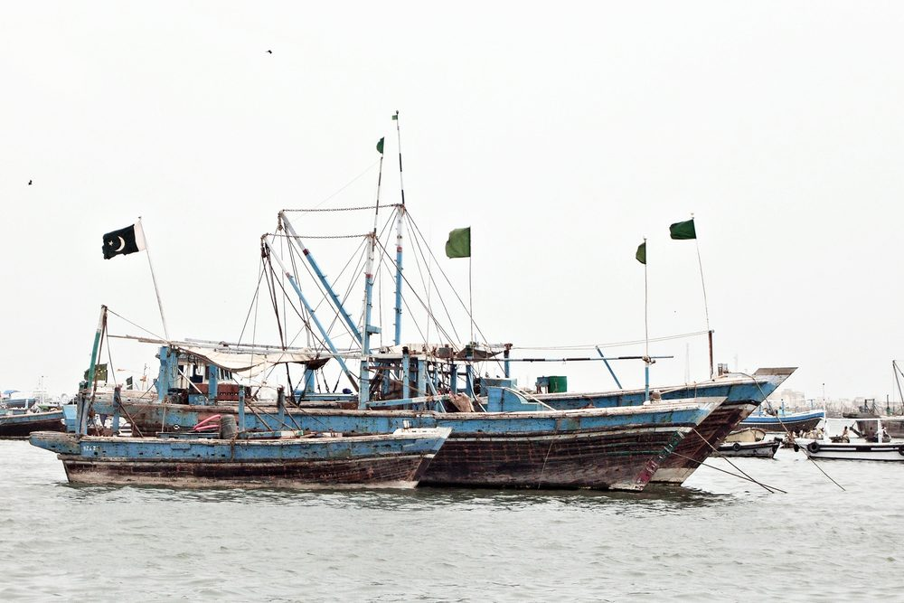
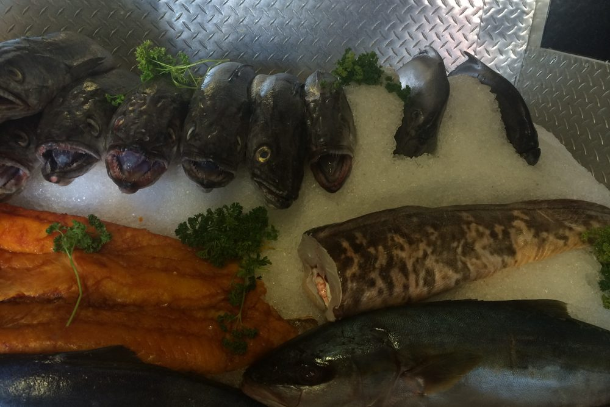

Cold storage that goes to sea — so your catch comes back market-fresh.
On-board, solar-assisted cold storage engineered for Pakistani fishing vessels. The catch goes straight from the Arabian Sea into an insulated hold held at 0–4°C — chilled, firm, and graded for the best price the moment you dock. No melting ice. No diesel generator. No slush, no spoilage, no fish lost to the journey home. Engineered cold for the sea, by the company that has engineered cold for Pakistan since 1959.

For a Pakistani fishing boat, the most valuable hours are also the most dangerous ones — the gap between the moment a fish leaves the water at around 27°C and the moment it reaches a buyer. Crushed ice from shore melts, drains, and runs out long before a full day's fishing is done. A diesel refrigeration genset burns fuel you can't always afford and breaks down at sea where no one can fix it. So the catch warms, softens, and loses grade — and the difference between fresh-firm and barely-acceptable is the difference between a profit and a bad day.
Our marine cold-storage system closes that gap. It is built on the same cold-chain engineering Izhar Foster has delivered on land for over six decades, re-engineered for the deck of a working vessel.
How it works — in plain terms
The system has three simple ideas working together.
1. Insulated fish tanks instead of an open ice hold
Heavily insulated, food-safe tanks replace the leaky ice box. Heat from the hot day and the salt air is kept out, so the cold you put in stays in. Catch loaded through the day is held at 0–4°C — the sweet spot for keeping fish firm, fresh, and high-grade.
2. Cold "banks" that are charged at the dock, not at sea
Inside each tank are sealed cold-storage plates. Overnight at the dock, while the boat is tied up and shore power is cheap, these plates are frozen solid — banking up a reserve of cold. That reserve is large enough to absorb the entire day's catch and the heat of the sea, with margin to spare. There is no loose ice to melt and no slush to drain — the cold is stored in the plates, and it holds for days even with no power at all.
3. Solar carries the day — diesel stays home
At sea, rooftop solar panels and a compact battery quietly top up the cold as the day warms. The result is a boat that runs its cold chain on sunshine: near-zero fuel cost while fishing, no genset noise or fumes, and nothing that needs refuelling mid-trip. The boat leaves the dock cold and comes back cold.

Why this protects your money, not just your fish
Fish that is chilled fast and held cold lands firm, bright, and full-grade. Fish that warms on the way home softens, gapes, and slides down to a lower grade — or to fishmeal value, a fraction of the fresh price. The cold chain is not a comfort; it is the single biggest lever on what your catch is worth at the auction.
- Higher grade, higher price — cold, firm fish commands the premium end of the market instead of the discount bin.
- Less waste — far less of the catch is lost to spoilage on long days and in summer heat.
- Export-ready quality — buyers serving EU, Gulf, and Chinese markets demand a verifiable cold chain. A boat that can prove its catch stayed cold can sell into markets a warm-hold boat cannot reach.
- No recurring ice bill — the daily cost of buying, loading, and replacing crushed ice disappears.
- No fuel burn at sea — solar replaces the diesel genset, so the cold runs effectively for free once installed.
Built for the sea, not adapted to it
A cold system on a boat fails in ways a warehouse never does — salt corrodes, vibration loosens, and there is no technician 40 km offshore. So every part is chosen for marine duty from the start:
- Salt-resistant throughout — marine-grade coatings, sealed enclosures, and corrosion-rated fasteners.
- Food-safe inside — smooth, fully cleanable, food-grade tank linings that meet hygiene expectations for fresh seafood.
- Secured against motion — anti-vibration mounting and structural fixing so nothing shifts in a swell.
- Engineered for Karachi heat — sized for Arabian Sea ambient temperatures and humidity, not a mild European catalogue rating.
- Simple for the crew — day-to-day operation comes down to connecting shore power at the dock and switching to solar before departure. Controls are labelled clearly, the system charges and cuts off automatically.
Engineered, not sold from a box
Every vessel is different — catch volume, trip length, deck space, and dock power all change the design. We assess your boat and your fishing pattern, then engineer the tanks, cold storage, refrigeration, solar, and shore-charging to fit it. You get a system matched to your boat and your catch, commissioned and proven before it earns its first trip — backed by the engineering depth of a company that has delivered cold-chain projects across Pakistan since 1959.
This is part of Izhar Foster's wider cold-chain capability — the same engineering that builds our cold stores, refrigeration systems, and insulated panels on land, now taken to sea.
Built for the boats that feed Pakistan's seafood economy.
From single-day inshore boats to vessels supplying export processors — anywhere the catch has to survive the trip back to port.
Small fishing vessels
Inshore boats landing a full day's catch market-fresh
Export-grade boats
Verifiable cold chain for EU, Gulf, and China markets
Fuel-cost-sensitive crews
Solar at sea replaces the diesel refrigeration bill
Multi-day operators
Cold that holds for days, not hours like loose ice
High-value species
Shrimp, croaker, pomfret — where grade is everything
Harbour fleets
Karachi, Korangi, Gwadar, Pasni and coastal Sindh/Balochistan
Boat cold storage — questions crews ask.
The practical questions we hear from boat owners and skippers before a build.
01How does on-board cold storage keep fish fresh without ice?
02Does the system run on solar or fuel?
03How much catch can it hold, and for how long?
04Will it survive conditions at sea?
05Why does keeping fish at 0–4°C matter commercially?
06Can you retrofit an existing fishing boat?
The science behind landing a better catch.
Why temperature decides what your fish is worth — and how at-sea cold storage changes the economics.
Solar Cold Storage for Fishing Boats: The At-Sea Cold-Chain Case
Post-harvest loss, the temperature science of fish quality, and why cold at sea is the highest-return upgrade a boat can make.
Stop Losing Your Catch on the Way Home
Why melting ice costs you grade and money — and how solar cold storage pays for itself.